Create quiz
This flow lets the user build a quiz from scratch — choosing from question templates
or using the AI generator to instantly create personalized questions based on the
participants' playlists.
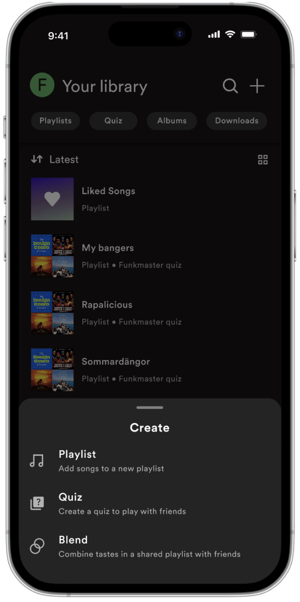
1. Create a new quiz.

2. Name the quiz.

3. Empty quiz – now you can add questions.
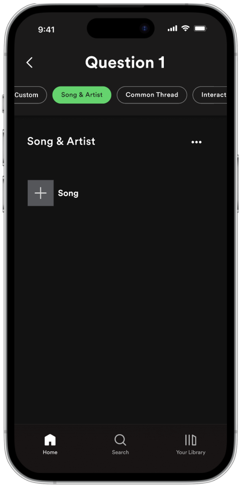
4. Add a question and choose between different question
templates.
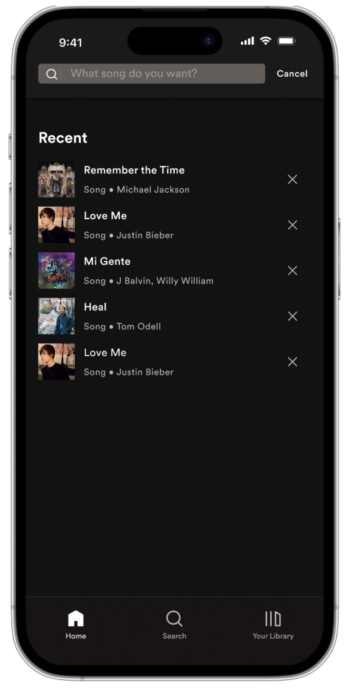
5. Add a song for the question.

6. Set the interval for the part you want to play for this
question.
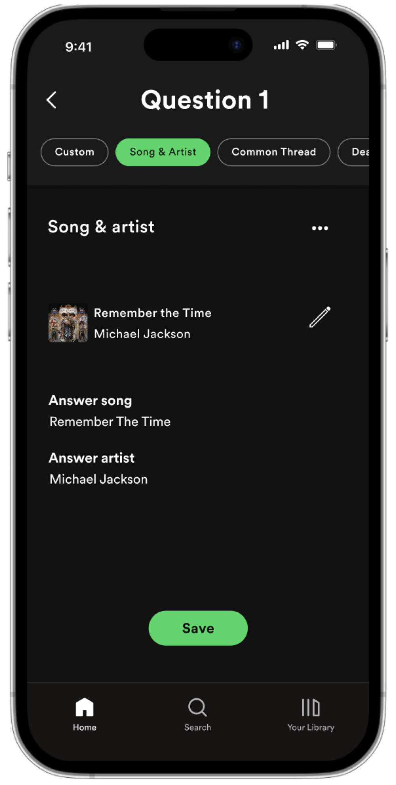
7. Based on the question template and chosen song, the answers
for the question are generated. They can also be edited if
needed.
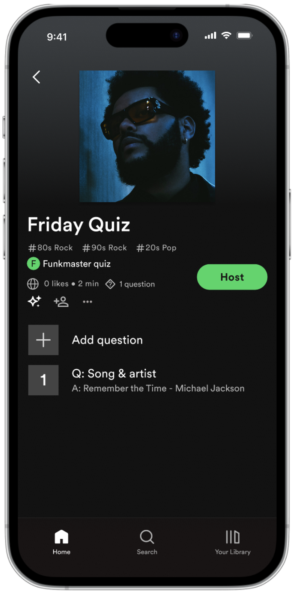
8. The first question is now added.
9. To create questions with the AI generator, press the marked
button.
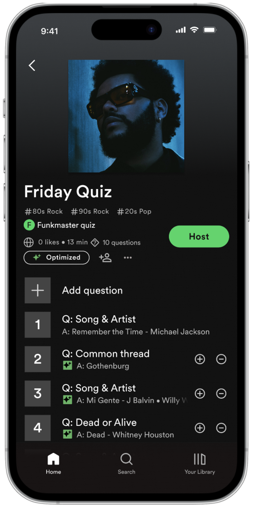
10. Multiple questions are now generated. The songs in these
questions are based on the participants’ playlists.
Host quiz
This is the host’s view during a live quiz — controlling which questions are active,
navigating between them, and reviewing participants’ answers when the quiz wraps up.
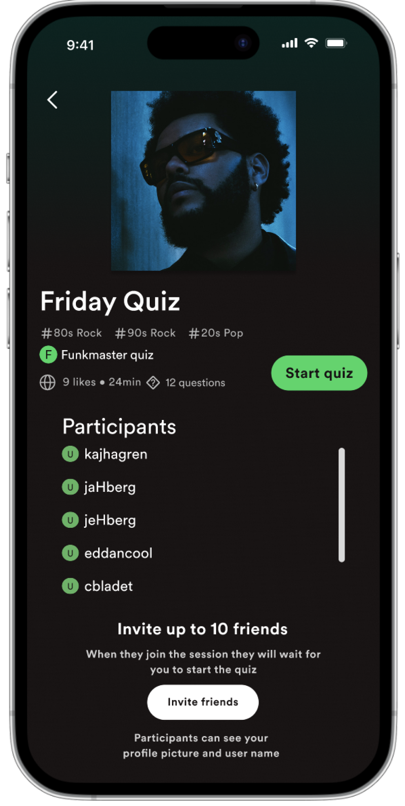
1. Invite friends and start the quiz.
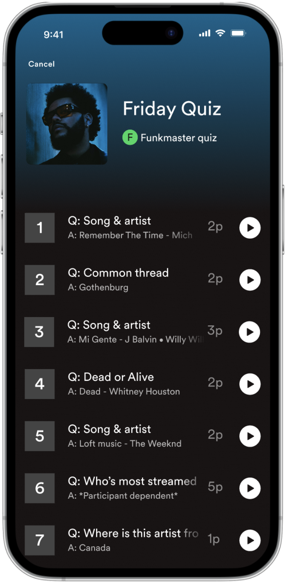
2. The quiz has started, but no questions are currently active.
You can play the questions in any order. When a question is
played, its answer form becomes available to all participants.
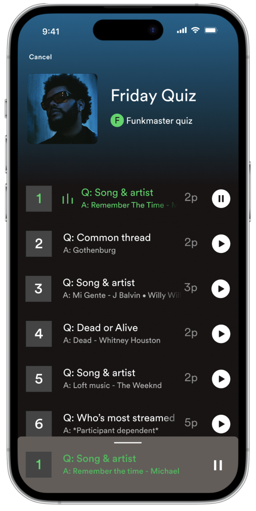
3. Start Question 1. Click on the question or drag the bar below
to view more details.
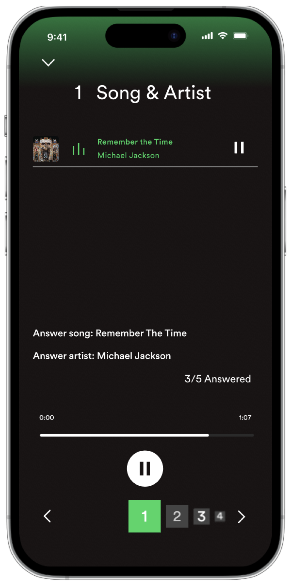
4. View detailed information about the question. Use the number
carousel below to navigate between questions. The active
question is highlighted in green.

5. This is what it looks like when you navigate to a question
that is not currently being played for the participants.
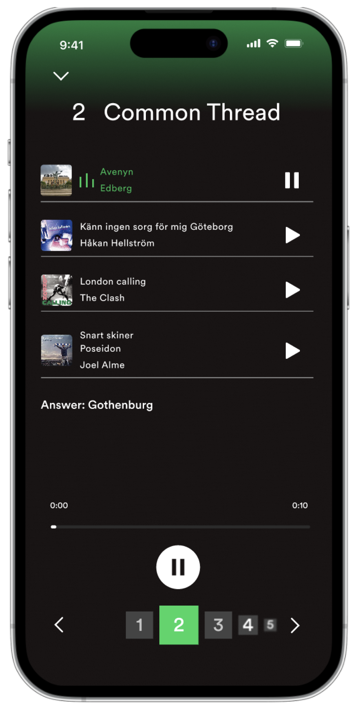
6. Now you are playing Question 2. This question includes four
songs. You can either press the play button to play them in
order, or select specific songs if you do not want to play them
all.
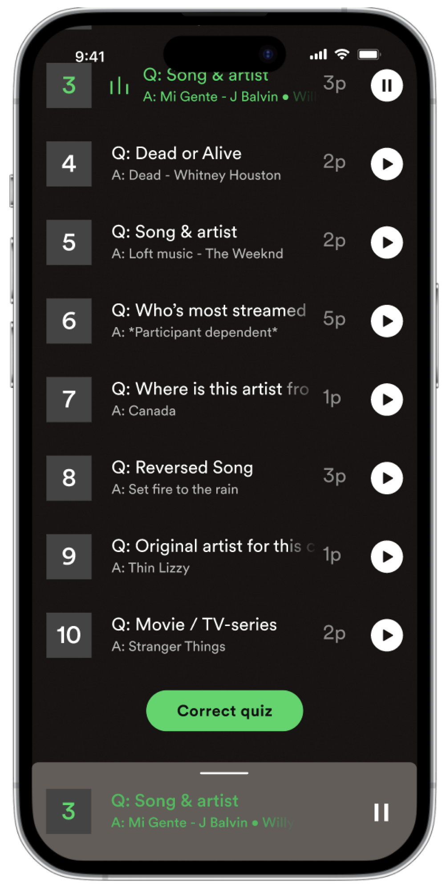
7. When finished, you can review and correct the participants’
answers.

8. Overview of all the questions in the quiz.

9. Open to view the participants’ answers. The app automatically
corrects them, but you can manually adjust the points if needed.
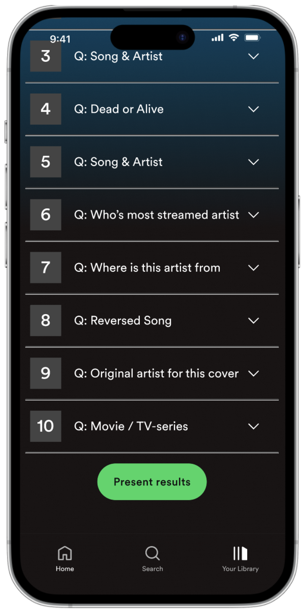
10. When you are done, you can present the results to the
participants.
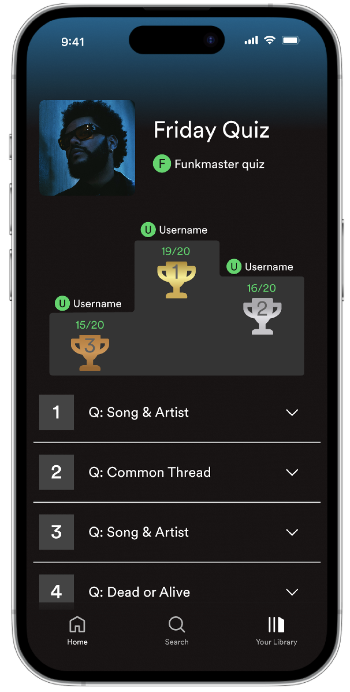
11. The winners are then displayed.
Participate in quiz
This is the participant’s experience — joining the quiz, answering questions at their
own pace, and seeing the results at the end.
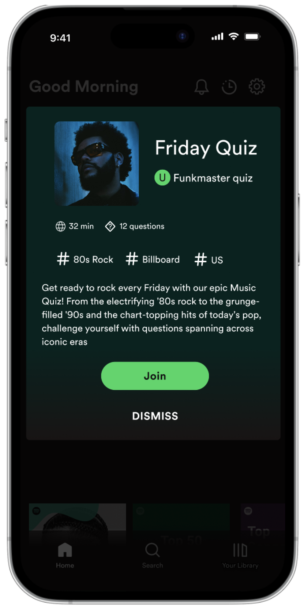
1. Join the quiz via QR code or link.

2. Wait for the host to start the quiz.
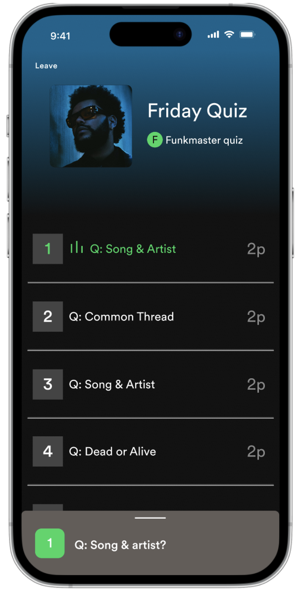
3. The quiz has started and Question 1 is now playing.

4. Click on the question to open the answer form. The active
question is highlighted in green.

5. Type your answer. You can always go back and edit it later.

6. Move to the next question and wait for it to become active.

7. If you are unsure about an answer but want to leave a note
for later, you can add it in the highlighted box.
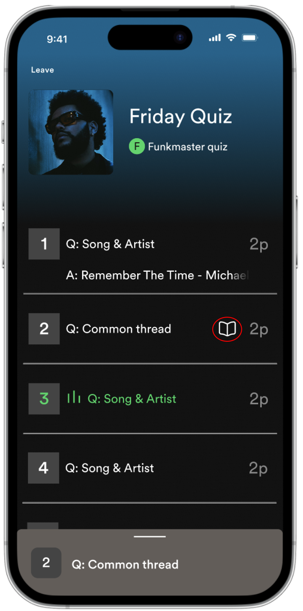
8. If you have added a note to a question, it will be indicated
by the notebook icon.
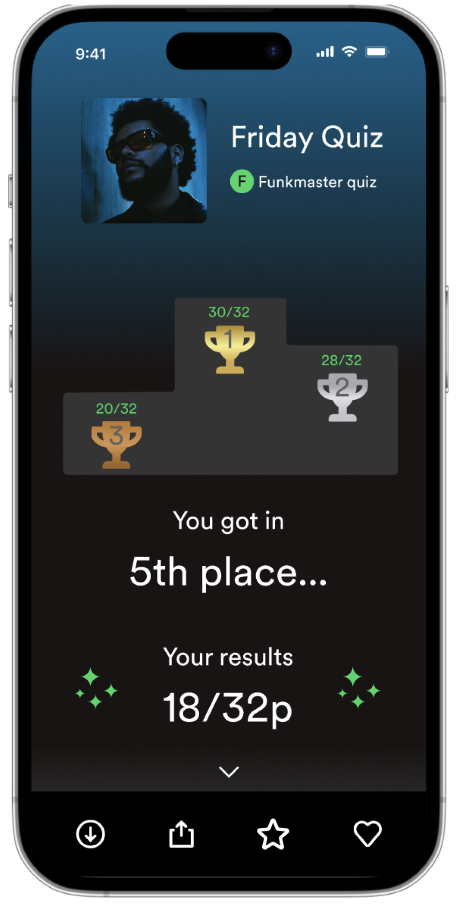
9. Once the quiz is finished, the winners will be displayed.
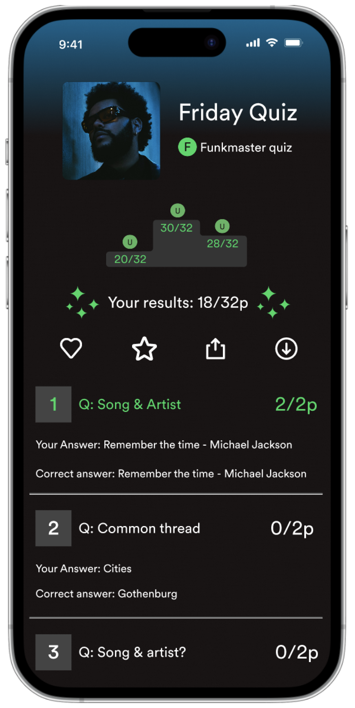
10. Then you can take a closer look at your result and, if
needed, appeal it to the host.